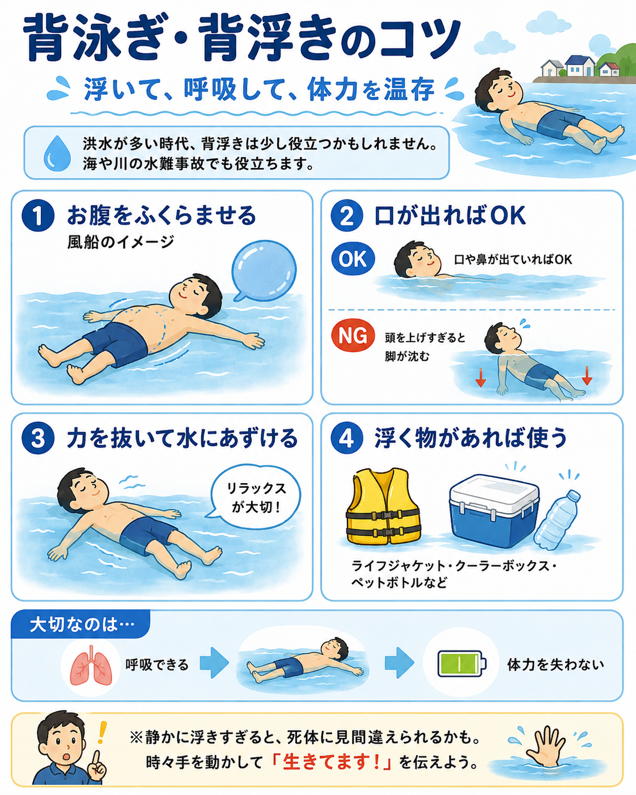
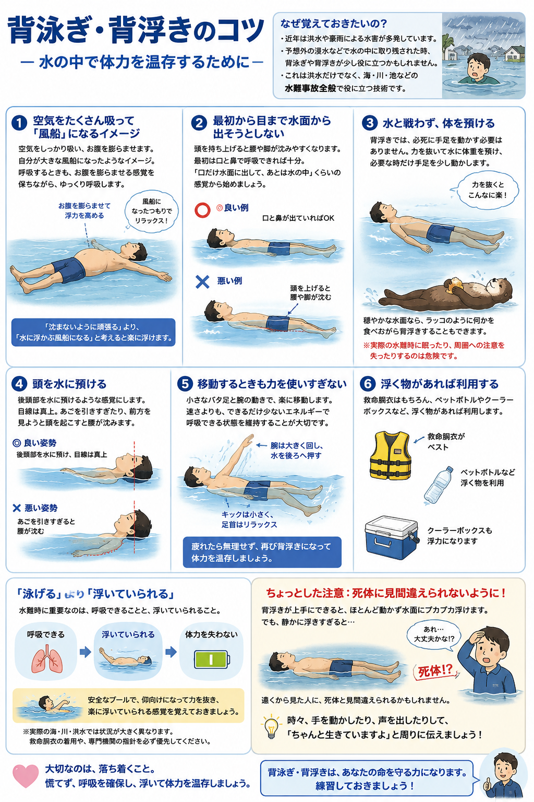

近年は、豪雨や洪水による水害のニュースを目にする機会が増えました。
もちろん洪水では、水が来る前に安全な場所へ避難することが最優先です。濁流の中を泳いで逃げようとするのは非常に危険です。
それでも、予想外の浸水などで水の中に取り残された時、背泳ぎや背浮きの技術が少し役に立つことがあるかもしれません。
また、これは洪水だけの話ではありません。海や川、池などで起こる水難事故全般でも、慌てずに仰向けになって浮き、呼吸を確保して体力を温存する技術は覚えておく価値があります。
そこで、私自身が背泳ぎをする時に意識しているコツも含めて紹介します。

1空気をたくさん吸って「風船」になるイメージ
私が背泳ぎで特に意識しているのは、空気をしっかり吸い、お腹を膨らませることです。
自分自身が大きな風船になったようなイメージを持つと、体を水に預けやすくなります。
呼吸するときも、お腹を膨らませる感覚を保ちながら、ゆっくり呼吸します。
「沈まないように頑張る」というより、自分が水に浮かぶ風船になったと考えるとうまくいきやすいです。
2最初から目まで水面から出そうとしない
初心者がやりがちなのが、
「目まで水面から出したい」
と思って頭を持ち上げてしまうことです。
頭を起こすと、その反動で腰や脚が沈みやすくなります。
最初は口と鼻で呼吸できれば十分くらいに考えます。初心者なら「口だけ水面から出して、あとは水の中」というくらいの感覚から始めてもよいでしょう。
耳や頬が水につかっていても問題ありません。
慣れてくると、どこまで力を抜いても浮いていられるのかが自然に分かってきます。
3水と戦わず、体を預ける
背浮きでは、沈まないように必死に手足を動かす必要はありません。
↓
水に体重を預ける
↓
必要な時だけ手足を少し動かす
という感覚のほうが長時間浮いていられます。
私の場合、穏やかな水面なら非常に楽な姿勢を維持でき、ラッコのように何かを食べながら背泳ぎすることもできます。
それくらい、うまく浮力を使えるようになると必要な力は小さくなります。
ただし、安全なプールなどでの話です。海や川、水害時などに眠ったり、周囲への注意を失ったりするのは危険です。
4頭を水に預ける
頭を持ち上げようとせず、後頭部を水に預けるような感覚にします。
目線は基本的に真上です。
あごを強く引いたり、前方を見ようとして頭を起こしたりすると、腰が沈みやすくなります。
5移動するときも力を使いすぎない
普通に背泳ぎで移動するときは、小さなバタ足と腕の動きを使います。
水難時に重要なのは速さではありません。
できるだけ少ないエネルギーで呼吸できる状態を維持することのほうが重要です。
疲れたら無理に泳ぎ続けず、再び背浮きになって体力を温存するという考え方もできます。
6浮く物があれば利用する
救命胴衣はもちろん、浮力を確保できる物があるなら利用します。
自分の泳力だけに頼るより、浮く物を使って呼吸を確保できるほうが安全です。

「泳げる」より「浮いていられる」
水泳というと、クロールや平泳ぎで何メートル泳げるかを考えがちです。
しかし水難時には、
↓
浮いていられる
↓
体力を失わない
という能力が非常に重要になることがあります。
そのため、安全なプールで練習するなら「25mを速く泳ぐ」だけでなく、仰向けになって力を抜き、楽に浮いていられる感覚を覚えておくのもよいと思います。
そして最後に一つ。
背浮きが上達して、ほとんど動かず水面にプカプカ浮けるようになると、かなり楽になります。
ただし、あまりにも上手に静止していると、遠くから見た人に「大丈夫なのか!?」と心配されたり、場合によっては死体と見間違えられたりするかもしれません。
安全な場所でも、時々手を動かすなどして、「ちゃんと生きていますよ」と周囲に分かるようにしておきましょう。